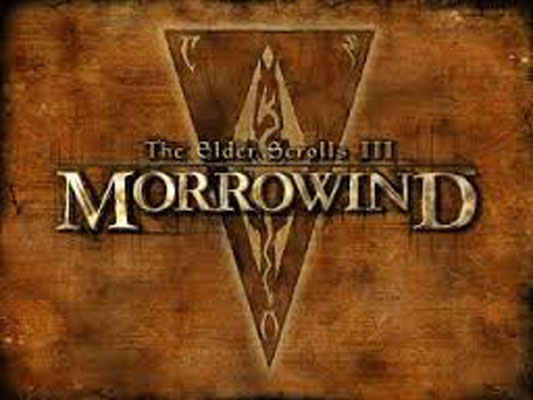
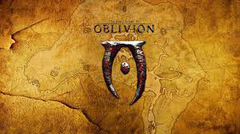
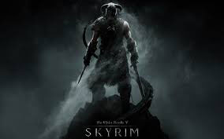

Elderscrolls has a series of many games, most lost in time. I wish to discuss the main three that anyone has the patience to play.The first being the third game of the series. Morrowind is a classic for me. This game was the first rpg I was introduced to. It features a wide range of light to heavy armor, a variety of weapons, up to and including an enemies leg. Magic ranges from levitating to fireballs. Out of these three games this would personally be the best. You get a good feel of what it would be like in the time period, you have a journal for quests, and literally have to follow the direactions your character records in the notebook for quests. On top of this Morrowind overall beats the other two in variety without question. Enjoy story over graphic? This game from the series is a must have then!
Oblivion does a good job on sharpening the edges on morrowind, although it doesnt have quite the same feel. This game limited the world more and unfortunately took away the levitation spell.. On the other hand the combat system was imporved drastically from morrwind. If you enjoy an easy game and love hack n' slash mentality I recommend Oblivion to you.
Skyrim is a good mix in between the two games. It adds a good crafting system into the mix, not to mention the great graphics. Bethesda really delivered on this game they bring in dragons, greater dialogue, and a much better leveling/combat system. If you want a real modern experience, with lots of dungeon delving, dive right into Skyrim once.
